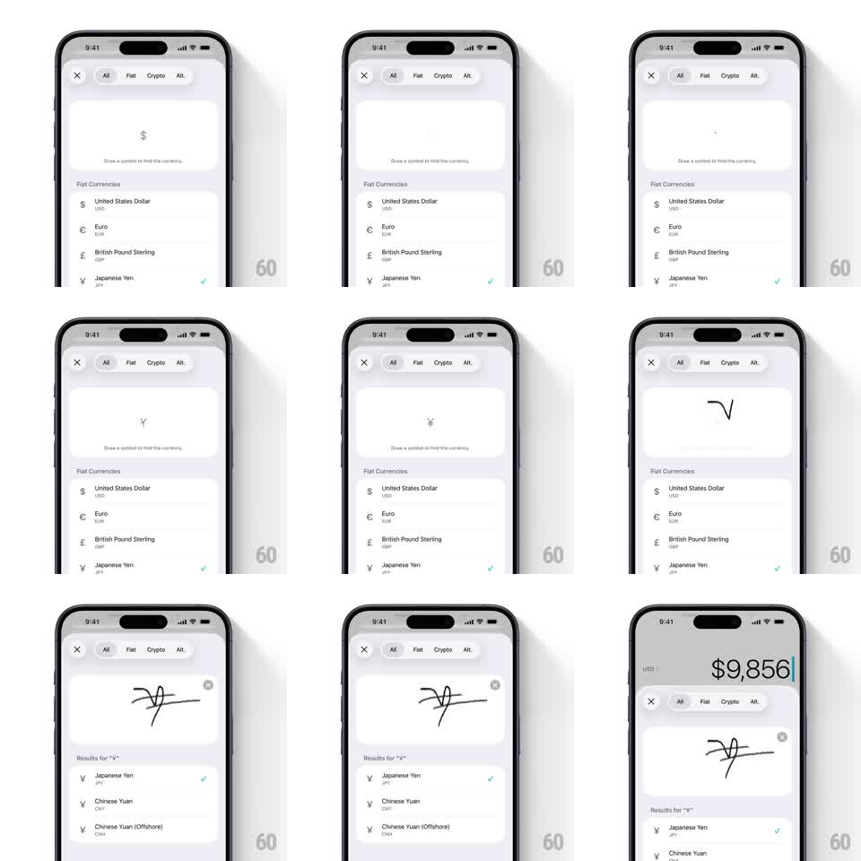

Media
Frame-by-frame

Rebuild this interaction 1:1: the currency picker's draw-to-search - sketching a currency symbol on the pad filters the list live to matching currencies.

Rebuild this interaction 1:1: the currency picker's draw-to-search - sketching a currency symbol on the pad filters the list live to matching currencies.
## Integration
Integration: stack-agnostic spec - springs given as stiffness/damping, timed motions as duration + curve; map every value to your framework and animation library of choice.
## Scene
Currency picker sheet, white: a close X and filter chips (All, Fiat, Crypto, Alt.), a large rounded draw pad with a faint hint glyph ("$") and "Draw a symbol to find the currency.", then the currency list - rows of symbol, name, code, and a teal check on the selected one.
## Motion spec
Pattern: freehand symbol recognition with live list filtering.
- Touch the pad: your stroke renders as a smooth dark line following the finger 1:1 (2px, round caps); a small clear X fades in at the pad's corner once ink exists.
- On stroke end, recognition runs (~300ms): the raw stroke tidies itself (points smooth, 150ms) and the result label appears above the list - "Results for '¥'".
- The list filters with a gentle reshuffle: non-matching rows fade and collapse (200ms), matching rows slide up into place (spring ~320/22); multiple guesses list as "Results for 'SM' and 'VT'" when ambiguous.
- The hint glyph dims as soon as inking starts; clearing the pad restores the full list (rows re-expand, 250ms) and the hint fades back.
- Selecting a row ticks its check (scale pop, 150ms) and the sheet dismisses (slide down, 300ms).
## Calibration
- The pad is the hero - the list below is subordinate and yields attention while drawing.
- Recognition tolerance is loose: a rough two-stroke Y with a bar should match Yen/Yuan.
## Reduced motion
List updates without collapse animation (crossfade 200ms); stroke renders without smoothing pass.
## Don't miss
- The stroke never lags the finger - ink is immediate, recognition waits for the lift.
- The selected currency's teal check is the only color accent on the page.